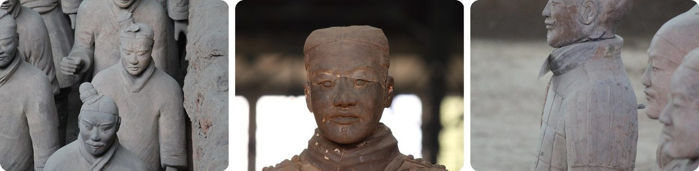
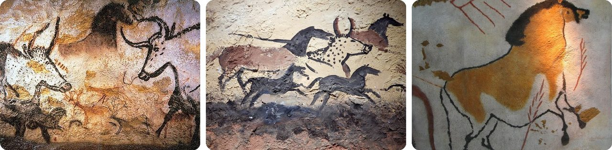
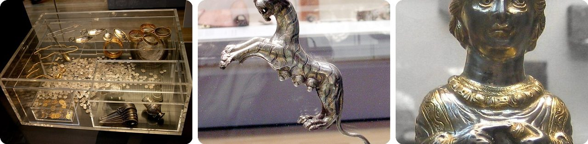
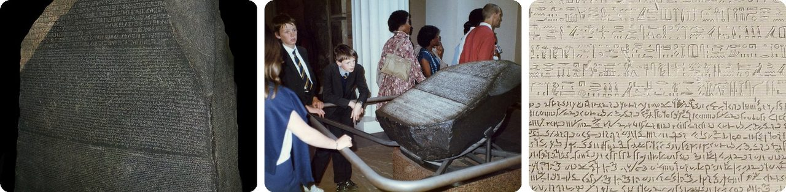
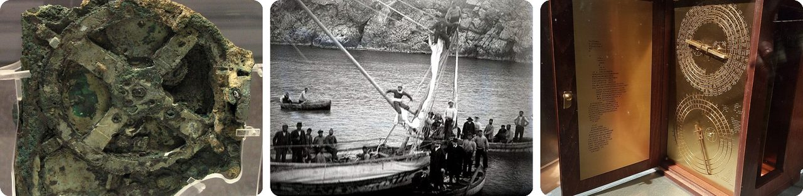
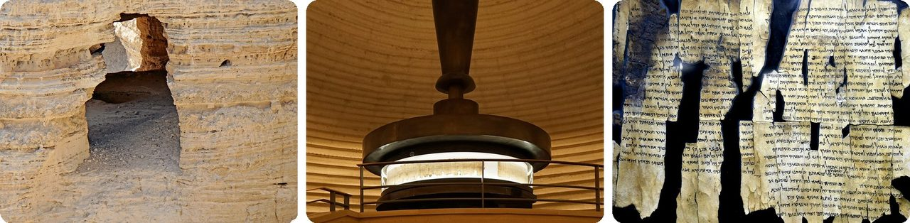
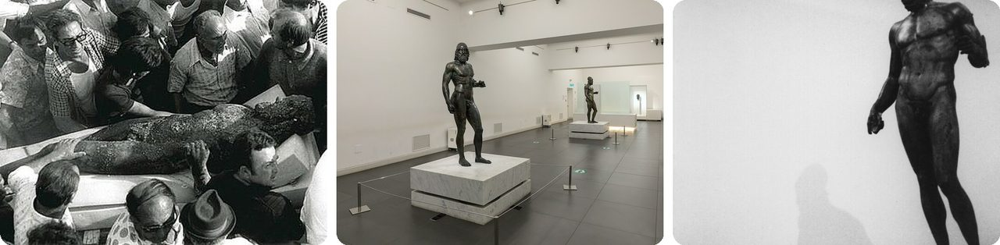
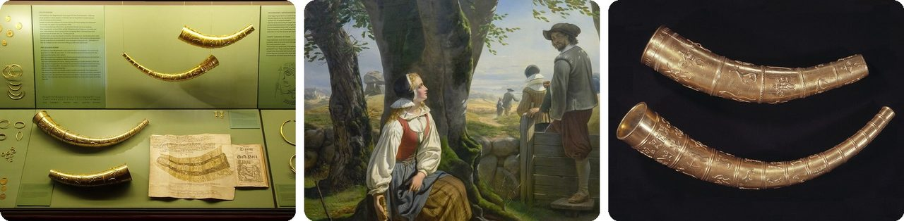
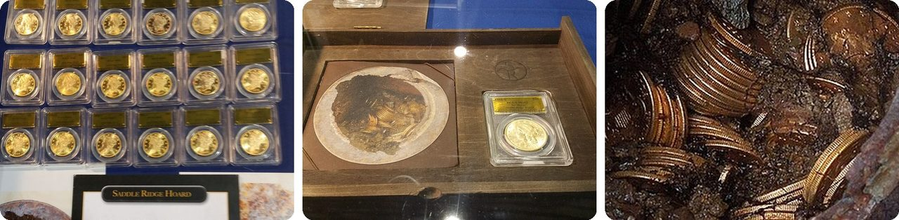
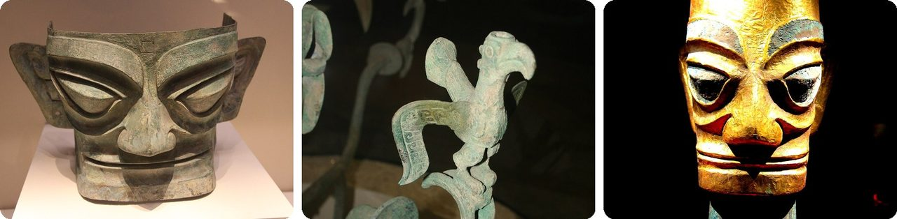

🌍 톱 10 우연히 발견된 잊힌 보물
2026년 11월 7일
1. 🇨🇳 우물을 파던 농부들이 병마용을 발견했어요

1974년 3월, 농부 양즈파(Yang Zhifa)와 그의 형제 다섯 명, 그리고 이웃 한 명이 중국 시안 근처에서 우물을 파다가 흙으로 만든 인형 조각에 부딪혔어요. 우연히 중국 첫 황제의 무덤 일부를 찾아낸 거예요. 약 2,200년 전에 묻힌 무덤이었죠.그 뒤 고고학자들이 깊이 약 7 m(23 ft), 그러니까 2층 집 높이만 한 구덩이들을 파냈는데, 그 안에는 실제 사람 크기의 흙 병사들이 가득했어요. 이 구덩이들에는 병사 8,000명 이상과 전차 130대, 말 수백 마리가 있는 것으로 추정되고, 대부분은 아직 땅속에 있어요.
그리고 놀라운 점이 있어요. 똑같은 얼굴이 거의 없다는 거예요. 일꾼들이 틀로 얼굴을 만든 다음 손으로 흙을 덧붙여서, 병사마다 다른 사람처럼 보이게 했거든요.
물을 찾으려고 땅을 팠는데 군대 하나가 통째로 나온 셈이에요.
2. 🇫🇷 로봇이라는 개가 십대들을 라스코 동굴 벽화로 이끌었어요

1940년 9월 12일, 프랑스 남서부 몽티냐크 근처에서 18살 마르셀 라비다(Marcel Ravidat)의 개 '로봇(Robot)'이 쓰러진 나무가 남긴 구멍 주변을 킁킁거리고 있었어요. 마르셀은 친구 세 명과 다시 와서 15 m(50 ft) 깊이의 구멍을 타고 내려갔어요. 근처 저택으로 이어지는 비밀 통로이길 바라면서요.그런데 벽에는 말, 사슴, 커다란 들소를 그린 600점이 넘는 그림이 가득했어요. 사람들이 약 17,000~22,000년 전에 그린 그림이었어요.
나중에 방문객들이 내쉬는 숨 때문에 그림이 상하기 시작해서, 진짜 동굴은 1963년에 문을 닫았어요. 지금은 근처에 똑같이 만든 복제 동굴을 구경해요.
한마디로, 개의 코 덕분에 17,000년 동안 닫혀 있던 미술관이 다시 문을 연 거예요.
3. 🏴 잃어버린 망치 덕분에 혹슨 보물을 찾았어요

1992년 11월, 농부 피터 워틀링(Peter Whatling)이 영국 잉글랜드 서퍽주의 혹슨 마을 근처 밭에서 망치를 잃어버렸어요. 그래서 금속 탐지기가 있는 은퇴한 정원사 친구 에릭 로스(Eric Lawes)에게 같이 찾아 달라고 부탁했어요.탐지기가 삐 소리를 냈지만, 망치 때문은 아니었어요. 로스가 찾은 건 땅에 묻힌 로마 시대 상자였는데, 그 안에 동전 14,865개와 금은 보물 약 200점이 들어 있었어요. 은 호랑이랑 멋쟁이 귀부인 모양의 후추통도 있었죠. 약 1,600년 전에 묻힌 상자였어요.
두 친구는 전부 파내지 않고 땅 주인과 경찰에 알렸어요. 그래서 다음 날 고고학자들이 조심스럽게 발굴할 수 있었죠. 두 친구는 보상금 175만 파운드를 나눠 가졌어요. 그리고 네, 망치도 나왔어요. 지금은 영국 박물관에 있어요.
소파 틈에서 열쇠를 찾다가 해적 보물 상자를 찾은 것 같아요.
4. 🇪🇬 로제타석은 요새를 짓는 데 쓰였어요

새겨지고 몇백 년이 지난 뒤, 이 오래된 이집트 돌은 로제타(라시드) 마을 근처에 요새를 짓는 건축 재료로 다시 쓰였어요. 1799년 7월, 프랑스가 이집트를 침공했을 때 프랑스 육군 장교 피에르프랑수아 부샤르(Pierre-François Bouchard)가 그곳에서 이 돌을 찾았어요.이 돌에는 기원전 196년에 쓴 같은 내용이 세 가지 글자로 반복돼 있어요. 이집트 상형문자(그림으로 된 글자), 민중문자라는 또 다른 이집트 글자, 그리고 고대 그리스어예요. 학자들은 이미 그리스어를 읽을 수 있어서, 그걸 정답지처럼 썼어요.
1822년, 장프랑수아 샹폴리옹(Jean-François Champollion)이 이집트 글자를 풀어냈다고 발표했어요. 이 돌은 무게가 약 760 kg(1,680 lb)으로 소 한 마리쯤 되고, 영국 박물관에서 사람들이 가장 많이 보러 오는 유물이에요.
다시 말해, 몇백 년 동안 벽 속에 숨어 있던 커닝 페이퍼였던 거예요.
5. 🇬🇷 해면 잠수부들이 고대 컴퓨터, 안티키테라 기계를 찾았어요

1900년 무렵, 해면 잠수부들(바다에 들어가 해면을 따는 사람들)이 그리스 안티키테라섬 앞바다, 물속 45 m(148 ft) 깊이에서 오래된 난파선을 발견했어요. 15층 건물 높이쯤 되는 깊이예요. 1901년에 그들은 조각상, 도자기와 함께 딱딱한 껍질로 뒤덮인 덩어리 하나를 건져 올렸어요.1902년, 아테네 박물관의 누군가가 돌 밖으로 삐져나온 톱니바퀴를 발견했어요. 나중에 엑스레이로 찍어 보니 안에 청동 톱니바퀴가 30개쯤 들어 있었고, 2,000여 년 전에 만들어진 것이었어요.
손잡이를 돌리면 톱니바퀴가 해와 달의 위치를 보여 주고, 일식과 월식을 수십 년 앞서 예측하고, 올림픽 경기가 언제 열리는지까지 알려 줬어요.
청동으로 만든 달력이자 우주 앱이에요.
6. 📜 양치기들이 사막 동굴에서 사해 문서를 찾았어요

1946년 말부터 1947년 초 사이, 베두인 양치기 세 명이 사해 근처 언덕에 있었어요. 그중 무함마드 에드디브(Muhammed edh-Dhib)가 동굴 안으로 굴러떨어졌는데, 거기서 오래된 두루마리가 든 흙 항아리들을 발견했어요.양치기들은 두루마리 몇 개를 천막으로 가져가서, 어떻게 할지 고민하는 동안 천막 기둥에 걸어 두었어요. 나중에 그중 세 개를 한 상인에게 7 요르단 파운드에 팔았는데, 그때 돈으로 약 28달러였어요.
알고 보니 이 두루마리들은 2,000년도 넘은 것이었고, 성경의 책들을 통째로 베낀 것 중 가장 오래된 사본도 들어 있었어요. 1956년까지 근처 동굴 11곳에서 서로 다른 글 981편의 조각이 발견됐어요.
2,000년 된 도서관이 중고 장터 물건처럼 거래된 거예요.
7. 🇮🇹 잠수부가 모래 밖으로 튀어나온 리아체 청동상을 봤어요

1972년 8월 16일, 스테파노 마리오티니(Stefano Mariottini)는 이탈리아 남부 리아체 앞바다에서 물고기를 잡으려고 잠수하고 있었어요. 약 10 m(33 ft) 아래에서 모래 밖으로 삐져나온 검은 어깨를 보고, 그게 청동이라는 걸 알아차렸어요.1미터쯤 떨어진 곳에서는 엄지발가락과 무릎이 보였어요. 그곳에는 그리스 예술가들이 약 2,500년 전에 만든 실제 사람 크기의 청동 전사상 두 개가 있었어요.
그는 부표 줄을 한 조각상의 팔에 묶고, 두 조각상을 모래로 덮어 숨긴 다음 발견 사실을 알렸어요. 커다란 그리스 청동상 원본은 남아 있는 게 아주 적어서, 이 둘은 더욱 귀해요.
저녁거리를 잡으러 잠수했다가 고대 거인 두 명을 만난 셈이에요.
8. 🇩🇰 소녀가 찾은 황금 뿔, 도둑이 녹여 버렸어요

1639년, 키르스텐 스벤스다테르(Kirsten Svendsdatter)라는 시골 소녀가 덴마크 남부 갈레후스 마을 근처에서 금으로 된 긴 뿔을 발견했어요. 1734년에는 20 m(65 ft)도 안 떨어진 곳에서 두 번째 황금 뿔이 나왔어요.두 뿔은 약 1,600년 된 것이었어요. 긴 뿔은 무게가 3.2 kg(7 lb)이었고 작은 인형들로 뒤덮여 있었어요. 짧은 뿔에는 만든 사람의 이름 '흘레와가스트(Hlewagast)'가 룬 문자(옛 북유럽 글자)로 한 줄 새겨져 있었어요.
그런데 1802년, 닐스 하이덴라이히(Niels Heidenreich)라는 금세공사가 가짜 열쇠로 뿔이 있는 곳에 들어가 두 뿔을 훔쳐서 녹여 버렸어요. 오늘날 박물관에서 볼 수 있는 뿔은 옛날 그림을 보고 만든 복제품이에요.
다시 말해, 두 번 발견되고 영영 사라진 보물이에요.
9. 🇺🇸 개를 산책시키던 부부가 금화가 든 깡통을 찾았어요

2013년 2월, 미국 캘리포니아 북부에 사는 부부가 자기 땅에서 개를 산책시키고 있었어요. 이름은 존과 메리라고만 알려져 있어요. 그때 메리가 흙 밖으로 삐져나온 녹슨 깡통을 발견했어요.깡통이 너무 무거워서 둘은 오래된 페인트가 들었나 보다 했어요. 집에 오는 길에 뚜껑이 깨지면서 금화 가장자리가 보였어요. 계속 파 보니 금화 1,427개가 든 깡통 여덟 개가 나왔어요. 1847년부터 1894년까지 만들어진 금화였어요.
금화에 적힌 금액을 다 더하면 27,980달러였지만, 전문가들은 약 1,000만 달러의 가치가 있다고 했어요. 미국에서 땅에 묻힌 금화가 발견된 것 중 가장 큰 규모예요.
한마디로, 역사상 최고의 개 산책이었어요.
10. 🇨🇳 농부의 도랑이 싼싱두이(三星堆, Sānxīngduī)로 이끌었어요

1927년, 중국 쓰촨성 광한 근처의 한 농부가 논밭에 물을 대는 도랑(관개 수로)을 치우다가 옥 유물을 한가득 파냈어요. 그리고 1986년, 그 지역 일꾼들이 우연히 구덩이 두 개를 찾았는데, 그 안에는 금, 청동, 옥으로 된 유물이 수천 점이나 가득했어요.이 유물들은 약 3,000년 된 것이고, 그 모양은 그때까지 중국 미술에서 본 것과 완전히 달랐어요. 귀가 커다랗고 눈이 툭 튀어나온 청동 얼굴, 새가 앉은 청동 나무, 금 가면을 쓴 머리들이 있었거든요.
2020년부터 2022년까지 새로 발굴하면서 구덩이 여섯 개가 더 나왔고, 그중에는 금이 84%인 금 가면도 있었어요.
도랑 밑바닥에서 사라진 세계 하나를 통째로 찾은 것 같아요.
재미있는 사실
2005년에 과학자들이 안티키테라 기계를 엑스레이로 찍었더니, 딱딱한 덩어리 속에 숨어 있던 희미한 글자를 읽을 수 있었어요. 원래 기계의 겉 상자를 덮고 있던 글자들이었죠. 전문가들은 이렇게 복잡한 톱니바퀴 기계가 그 뒤 약 1,500년 동안 다시 나타나지 않았다고 말해요. 1300년대 유럽의 천문 시계가 나올 때까지요. 안티키테라 기계는 시대를 훨씬 앞서간 많은 고대 발명품 중 하나예요.
사진 출처 (Wikimedia Commons)
- #1: Qin Terracotta Army, Pit 1 09.jpg by Gary Lee Todd, Ph.D., CC0
- #1: Terracotta Warrior Face (flickr) by akasped, CC BY 2.0
- #1: Qin Terracotta Warrior 06.jpg by Gary Lee Todd, Ph.D., CC0
- #2: Lascaux painting.jpg by EU, Public domain
- #2: left wall of the hall of bulls (flickr) by subarcticmike, CC BY 2.0
- #2: Lascaux, horse.JPG by HTO, Public domain
- #3: Hoxne Hoard 1.jpg by Photograph by Mike Peel (www.mikepeel.net)., CC BY-SA 4.0
- #3: 10 Silver Tigress Hoxne Hoard (flickr) by lindasomed45@gmail.com, CC BY 2.0
- #3: British Museum Hoxne Hoard Empress Pepper Pot.jpg by unknown, CC0
- #4: Rosetta Stone.JPG by Hans Hillewaert, CC BY-SA 4.0
- #4: Rosetta-stone-display-in-1985.jpg by RickDikeman, CC0
- #4: la pierre de Rosette / Rosetta stone (flickr) by OliBac, CC BY 2.0
- #5: NAMA Machine d'Anticythère 1.jpg by No machine-readable author provided. Marsyas assumed (based on copyright claims)., CC BY 2.5
- #5: Antikes Wrack von Antikythera 02.jpg by Unknown authorUnknown author, Public domain
- #5: Antikythera mechanism frontview, 1st-2nd century BC, Greece (model).jpg by Gts-tg, CC BY-SA 4.0
- #6: Israel-06009 - Most Famous Cave (flickr) by archer10 (Dennis), CC BY-SA 2.0
- #6: Isaiah scroll at the Shrine of the Book.jpg by Dennis G. Jarvis, CC BY-SA 2.0
- #6: Dead Sea Scroll 28a from Qumran Cave 1, the Jordan Museum in Amman.jpg by Osama Shukir Muhammed Amin FRCP(Glasg), CC BY-SA 4.0
- #7: Bronzi di riace ritrovamento.jpg by Ernesto Franco (from Bivongi, Reggio Calabria province), Public domain
- #7: Reggio Calabria - Museo archeologico nazionale - Bronzi di Riace - 11.jpg by Benjamin Smith, CC BY-SA 4.0
- #7: Riace Bronze and his shadow (flickr) by Ken_Mayer, CC BY 2.0
- #8: Copenhagen - Nationalmuseet - Golden horns of Gallehus.JPG by Lestat (Jan Mehlich), CC BY-SA 3.0
- #8: Kirstine Svends finds golden horn (rawpixel) by unknown, CC0
- #8: Guldhornene DO-10765 original cropped.jpg by Nationalmuseet, CC BY-SA 4.0
- #9: Saddle Ridge Hoard (14870547812).jpg by Michel Curi, CC BY 2.0
- #9: 1866-S $20 - Saddle Ridge Hoard (14847894786).jpg by Michel Curi, CC BY 2.0
- #9: Saddle Ridge Hoard coins and dirt.jpg by Kagin's Inc., CC BY-SA 3.0
- #10: Shang Bronze Mask, Sanxingdui.jpg by Gary Todd, CC0
- #10: Bronze Tree, Sanxingdui 2c.jpg by Gary Todd, CC0
- #10: Sanxingdui gold mask.jpg by momo, CC BY 2.0


.jpg){kind=link}


.jpg){kind=link}
.jpg){kind=link}